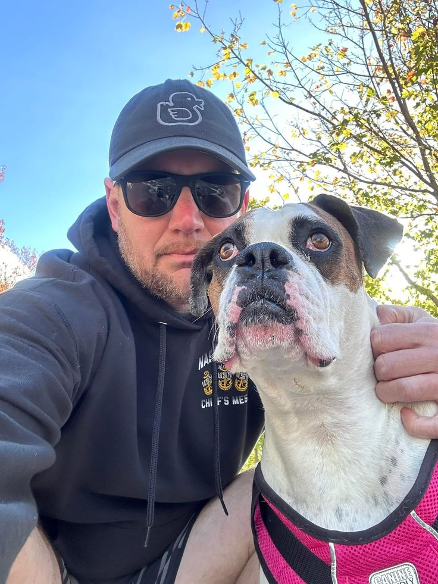

Confianza
Encuentra personas verificadas para cuidar y pasear a tu mascota.
Encuentra personas verificadas para cuidar y pasear a tu mascota.
Paseos, compañía y atención para mantener a tu mascota feliz.
Elige el servicio ideal según lo que tu mascota necesita en este momento.


Paseos y cuidado
Cochabamba,Bolivia
Desde 50 BS / paseo
Ver perfil
Cuidado en casa
La paz,Bolivia
Desde 80 BS / día
Ver perfil
Cuidado y visitas
Santa Cruz, Bolivia
★ 4.7 · 63 reseñas
Desde 150 BS / día
Ver perfil